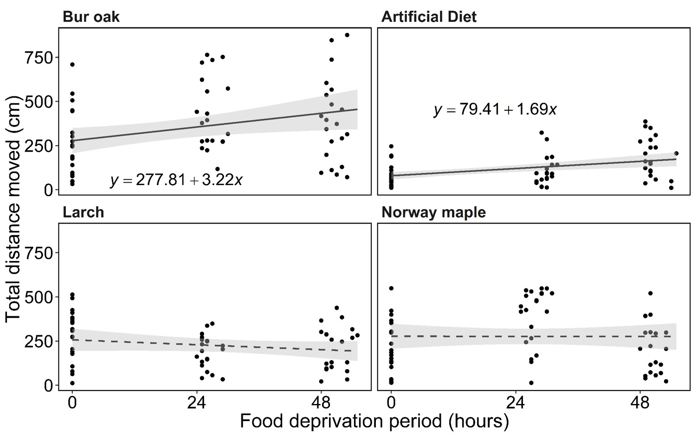

Even caterpillars are what they eat
Tl;dr: The food that caterpillars eat can affect their movement behavior, possibly due to the nutrition differences.
For my Master’s, I spent far too much time working with an invasive caterpillar Lymantria dispar (this caterpillar may be familiar to those of you from the eastern US under a different common name, but in 2021 the common name has been dropped due to the negative connotations it carried for some eastern European peoples. I won’t be using it except when it’s [unfortunately] included in a citation). I reared a bunch of these little guys in the lab for my experiments and it was such a pain.
First, they cannibalize each other even when food is available. Second, they are extremely susceptible to some kind of mold when grown in the lab. No amount of sanitation (of myself, the housing, the food) seemed to help contain it. I would have to rear about 500 at a time if I wanted 100 to use in experiments. And they smelled awful! By the time I was done with my thesis, I never wanted to look at another L. dispar caterpillar. Since then though, I’ve come around on them. They’re a unique insect in the world of invasive species because we know when and where they were introduced, and they’ve been studied to death as a model invasive insect. You can read all about the introduction of this insect in the 1896 tome “The Gypsy Moth Porthetria dispar” (the genus of this species has since changed). I’ll tell you some of the more interesting bits here though.
Etienne Trouvelot brought these insects over from France (L. dispar is native to Europe and Asia) to Medford, MA around 1869. Etienne was a naturalist, astronomer, and artist and at the time, was interested in producing a more hearty breed of silk worm. You see, silks worms are pretty but they’re very picky and incredibly hard to rear. Lymantria dispar, on the other hand, will eat just about anything you give it and (despite my experiences with it), much easier to rear while also producing their own silk! Etienne was hoping to cross-breed these two caterpillars. He apparently was not aware that they’re two very different species and cross-breeding would not be successful. Regardless, one day the L. dispar caterpillars he was keeping got loose! This part of the story is less certain - was it a thunderstorm that knocked open the enclosures? Did they escape some other way? but no matter what they got out.
To Etienne’s credit, he immediately tried to recover them. He tried enlisting members of the town to help him, but at the time the concept of an invasive species didn’t really exist and no one bothered to help. Within the next decade, their populations grew out of control! There are quotes in the aforementioned 1896 publication of people gathering them by the bucket full in the morning, finding them in their closets, or being able to hear their frass (poop) raining down from trees on the roofs of their house. At this point, it was too late to control them and their populations began to grow and spread. Their egg masses are small and brown and easily hidden on firewood or on the underside of cars (or that far back in time, carriages), so they’re often inadvertently transported around which contributes to their spread.
These insects are prolific feeders and they feed on virtually all species of deciduous trees in the eastern US and even a few species of conifers. The extensive defoliation they cause during outbreaks won’t often kill trees, but repeated defoliation year after year will weaken trees and expose them to secondary mortality agents. They’re also gross when they outbreak - they get EVERYWHERE. And as the hairs on their bodies can be irritating to humans and pets, so they’re a bit of a health hazard too. Plus, it’s not fun having trees without any leaves in your neighborhood during outbreaks.
The US federal government has maintained a quarantine for this insect and has regulations in place to limit it’s movement because of the costs associated with it’s defoliation. Without getting into the weeds, my Master’s research focused on evaluating the movement potential and behavior of these caterpillars because we needed to understand how far they could crawl to ensure regulatory practices were appropriate, which brings me to the topic of this post.
For one of my thesis chapters, I studied the effect of different food sources on the movement of L. dispar caterpillars. One regulatory practice in the wood processing industry required that wood be stored at least 100 feet away from any standing trees, on the assumption that this would be far enough that caterpillars and adults wouldn’t find their way to the wood and lay eggs on it. However, there’s very little research (i.e. none) that supported this number. We wanted to get some baseline data on the movement of the caterpillars and their behavior. The type and quantity of food can have a large impact on the movement capabilities and behavior of insects. Given how many different types of plants L. dispar has been shown to eat, we wanted to see if preferred hosts and non-preferred hosts caused different movement behaviors.
These experiments were all conducted in the lab to give us a real controlled environment. Now, you may be wondering, how did we study the movement of an insect in a lab based environment? We used a servosphere! This futuristic sounding device is a ball situated atop three orthogonal motors. A camera pointed at the top of the ball watches an insect as it crawls around on top and it signals to the motors to rotate the ball so that the insect is kept in position at the apex of the ball. Essentially, it’s a treadmill but for insects!

We fed our caterpillars 5 different foods: Bur oak, eastern larch, Norway maple, silver maple, and the artificial diet commonly used to raise them in the lab. We chose these foods as they cover a range of what are considered preferred, with bur oak and eastern larch being listed as preferred, Norway maple being somewhat preferred, and silver maple rarely being attacked. Because these insects are used often in lab studies, we also wanted to know how the artificial diet may be affecting their behavior. The caterpillars were further split into three feeding regimes where they were starved for 0, 24, or 48 hours prior to being placed on the servosphere. We know food deprivation can increase the movement of other insects and we wanted to understand how their movement might change once they’ve consumed all the food in an area.
So we but a bunch of caterpillars on the servosphere and recorded their movement for 10 minutes (after a 5 minute acclimation period). Somewhat surprisingly, when the larvae were not starved, they tended not to move. (You’ll notice silver maple is missing from these graphs - the caterpillars refused to eat it and all died).The longer they had gone without food though, the more likely they were to move. Except larch. Those fed larch were moving all the time.

The caterpillars fed larch always moved, but they actually moved less distance the longer they were starved. In contrast, the larvae we fed on oak increased how far they moved (and there was more variance in how far they moved), as did those fed on artificial diet.

So, we feel that our results show that larvae feeding on what are considered preferred hosts tend to move further as starvation increases. One possible explanation is that these hosts (bur oak) are preferred for a reason: they’re more nutritious/the insects can access more of the nutrition. So when they are eating it (not starved) they’re content and just hang out. When they have eaten it and then are deprived of it, they’re in a better state physiologically to equip them to move further.
The results from the caterpillars fed on larch stood out to us. It is listed as a susceptible (i.e. preferred) host in the literature, which makes it unique among conifers. Most conifers are not susceptible at all to European L. dispar (Asian L. dispar is another story, and it’s own subspecies). While the larvae did eat the larch, it seems to change their movement behavior, especially compared to bur oak. This is likely also tied back to the nutrition of the tree itself and suggests that, while L. dispar will eat it, it’s definitely not the best food for them.
So, this study didn’t give us any groundbreaking discoveries but it gave us a starting place with which we could evalute some of the regulatory practices (the focus of my other chapter).